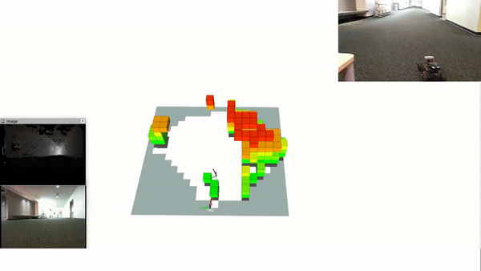
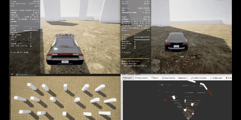
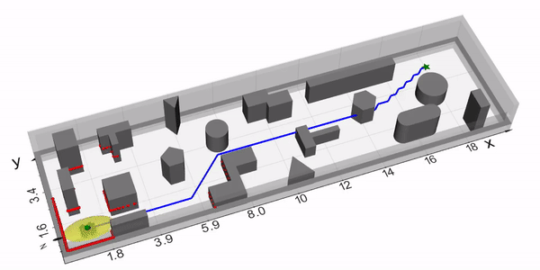
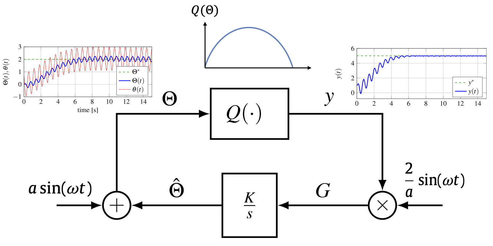
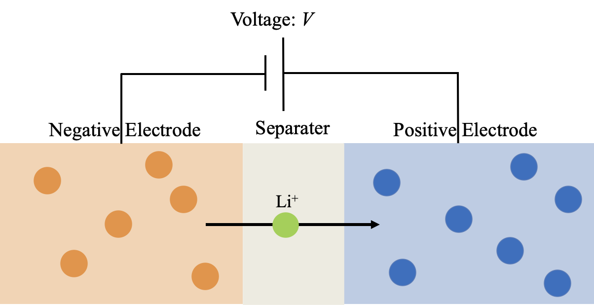
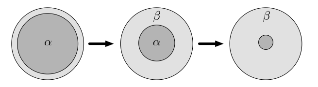
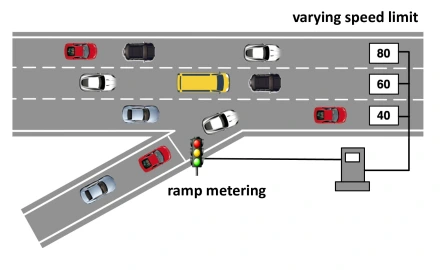
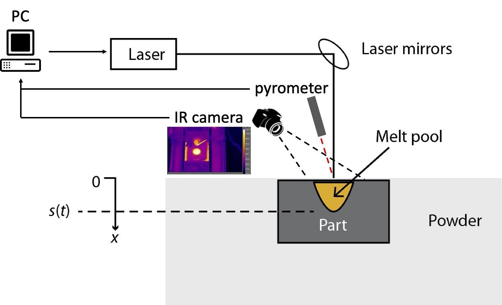
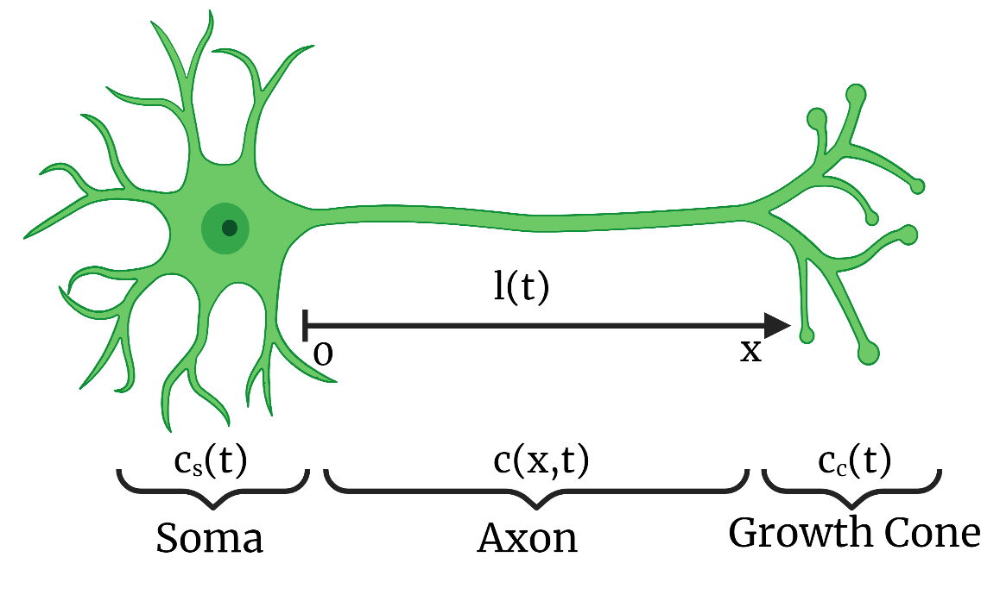

Robotics
Active Sensing for Mapping
|  |
Simultaneous Localization and Mapping (SLAM) is a probabilistic inference technique allowing an autonomous robot to estimate its location from onboard camera and inertial sensors and construct a map of its surroundings in real time. SLAM research has been instrumental in allowing robotics to transition from the factory floor to numerous applications in unstructured environments, such as autonomous transportation, structure inspection, mining, environmental monitoring, and many more. The traditional SLAM algorithms operate in a passive estimation setting, where data is provided to the system but its acquisition is not optimized. Autonomous systems employing SLAM see but do not look. Our central research objective is to develop a novel planning algorithm for SLAM by actively optimizing the robot’s trajectory to obtain more informative data and minimize uncertainty in its environment model.
[Project website] Relevant publications: [IROS'21] [ACC'22] [IROS'22] |
Vision-Based Target Tracking
|  |
Active target tracking serves as a problem to reduce the uncertainty in the target state of interest by planning the trajectory of the sensing robot gathering information about the dynamic target state. The difficulty of the general active target tracking problem is inherent in predicting the future target state, optimizing the sensing robot trajectory with a limited Field of View (FoV), and taking into account the stochasticity of the target motion and the observation from the sensor. The goal of this project is to clarify the reliable prediction method for the future target state and developing a policy learning method for the target tracking by optimizing the robot motion to maximize acquired information about the targets. The target dynamics can be modeled by a knwon dynamics or can be learned by conformal prediction from offline data. Both model-free and model-based reinforcement learning will be pursued to obtain a robust and implementable control policy under reasonable amount of data.
Relevant publications: [ICRA'23], [L4DC'23] |
Safety under Uncertainty
|  |
One of the significant tasks for implementing autonomous robots in practice is to guarantee safety under the executed planning. The global information of the environment is hard to acquire in unknown and unstructured space. The on-board sensors equipped with robots instead enables perception of the local information. We pursue to found a robust safe navigation to reach a goal without collisions with objects under uncertain robot and environment models via utilizing only local information. The uncertain models can be identified online through synthesizing a safe navigation with a dynamics learning using deep neural network.
We will demonstrate such a sophisticated control and learning algorithms in the hardware experiments of ground robot and quadrotors.
[Workshop website] Relevant publications: [L-CSS/ACC'23] |
Control Theory
Control of Stefan PDEs
|
|
Computational modeling of complex physical systems arising in thermal, chemical, fluid, and network systems is governed by a spatio-temporal dynamics, mathematically described as Partial Differential Equations (PDEs). In particular, a thermodynamic model of liquid-solid phase transition, such as melting and solidification phenomena, has been known as the Stefan problem which is a special class of a nonlinear PDE. While a numerical analysis of the Stefan problem has been considered intensely, the control and estimation problems have been studied relatively fewer in spite of its importance in practical science and engineering. The central goal of our theoretical work is to develop a control and estimation design for the Stefan problem and general other class of PDEs governing complex physical systems. We also conduct experiments of melting paraffin of an energy storage material to test and validate the designed feedback control algorithm.
|

Optimization and Learning by Extremum Seeking
|  |
Extremum Seeking (ES) has been widely utilized as a real-time model-free optimization method arising in adaptive control. ES is literally a user-friendly tool owing to its model-free nature. However, most of the existing contributions of ES have been achieved for a plant governed by Ordinally Differential Equations (ODEs). Motivated by various applications of complex physical systems mentioned above, we pursue to develop a novel ES design to extend the class of systems to PDEs and time-delay systems. Furthermore, inspired by a recent intensive advancement of data science and machine learning, we also pursue to develop a novel data-driven ES algorithm for iterative-learning of unknown parameters as an alternative approach to the well-known stochastic gradient descent.
|
Energy Systems
Latent Heat Thermal Energy Storage
|
|
Energy consumption by heating, ventilation, and air conditioning (HVAC) usage in buildings is tremendously dominant. To reduce the energy consumption by HVAC, developing efficient thermal energy storage systems is of high demand. The conventional sensible heat storage systems store the energy by change of the temperature in a single-phase material, which owns a limited capacity. Instead, the latent heat storage system, which stores the thermal energy by change of the phase in a phase change material (PCM), owns a much larger capacity under a constant temperature than the sensible heat. One significant challenge for the usage of the latent heat storage is how to estimate and control the stored energy in PCM, since the physical phenomena are complicated. I have established an implementable control algorithm for storing the desired amount of energy in PCM, through extending the control design for the Stefan PDE system to the digital control design with taking into account the effect of the heat loss, and conducted experiments of the proposed thermal control using paraffin as PCM.
|
Battery Management Systems
|   |
|
Climate Dynamics and Arctic Sea Ice
| Credit: NASA |
After the year 2000, the amount of Arctic sea ice starts drastically declining, as observed from the satellite data by NASA. The sea ice plays a significant role in climate dynamics due to its high reflectivity, thereby the decline of the sea ice leads to more absorption of the solar energy into the earth, and thus the global warming is promoted. To accurately predict the future amount of the sea ice, the spatial temperature profile inside the sea ice needs to be known. However, the spatially distributed temperature in sea ice is difficult to recover in realtime using a limited number of thermal sensors. Hence, the online estimation of the sea ice temperature profile based on some available measurements is crucial for the prediction of the climate change. I have developed an accurate estimation for the sea ice temperature profile utilizing satellite data of the surface temperature and the thickness of the sea ice.
|
Other Applications
Traffic Management
|  |
There are many remaining problems in traffic management to solve for realizing a efficient and safe transportation systems. For instance, traffic on a freeway segment with capacity drop at outlet of the segment is a common phenomenon that leads to traffic bottleneck problem. The capacity drop can be caused by lane-drop, hills, tunnel, bridge, or curvature on the road. If incoming traffic flow remains unchanged, traffic congestion forms upstream of the bottleneck since the upstream traffic demand exceeds its capacity. Therefore, it is important to regulate the incoming traffic flow of the segment to avoid overloading the bottleneck area. Traffic densities on the freeway segment are described with the Lighthill–Whitham–Richards (LWR) macroscopic partial differential equation (PDE) model. The incoming flow at the inlet of the freeway segment is controlled so that the optimal density that maximizes the outgoing flow is
reached and the traffic congestion upstream of the bottleneck is mitigated. The density and traffic flow relation at the bottleneck area, usually described with fundamental diagram, is considered to be unknown. We tackle such a traffic management problems by designing boundary control using backstepping and extremum seeking for the LWR PDE.
|
Additive Manufacturing
|  |
Additive Manufactuing (AM), also known as 3D-printing, is a state-of-the-art manufacturing technology which has emerged rapidly in the recent decade as observed from the growth in global market. AM's impact relies on products and supply chains in numerous industries such as automobiles, consumer electronics, aerospace, medical devices, etc. We study both of two popular materials dealt in AM, that are, polymer and metal. In polymer AM, we focus on screw extrusion process which enables a fast printing, and build a control system that stabilizes the filament production rate. In metal AM, Selective Laser Sintering (SLS) is the most common technique of the powder-bed fusion AM processes that fabricate structurally
sound three-dimensional products from a computer-aided design (CAD) models. We design robust control system for laser power that enables a desired geometry of the melt pool in layer-by-layer process of SLS-based metal AM.
|
Neuroscience
|  |
Neurological disorders, such as spinal cord injuries, Parkinson's disease and Alzheimer's disease, limit the functionality of neurons. A recent medical therapeutic, Chondroitinase ABC (ChABC), aims to cure these conditions by restoring neuron functionality through axon growth for damaged neurons by manipulating the extracellular matrix (ECM), the network of macromolecules and minerals that surrounds neurons and controls their activity, thereby neurons produce tubulin proteins which elongate the axon. The continuum model describing such a process is modeled as a coupled Partial Differential Equation (PDE), which represents the behavior of the tubulin concentration along the axon, with a moving boundary governed by Ordinary Differential Equations (ODE) consisting of the dynamics of the axon length and tubulin concentration in the growth cone.
My work is to propose nonlinear design methods for a state estimator and a feedback control law for the continuum model of axonal elongation.
|